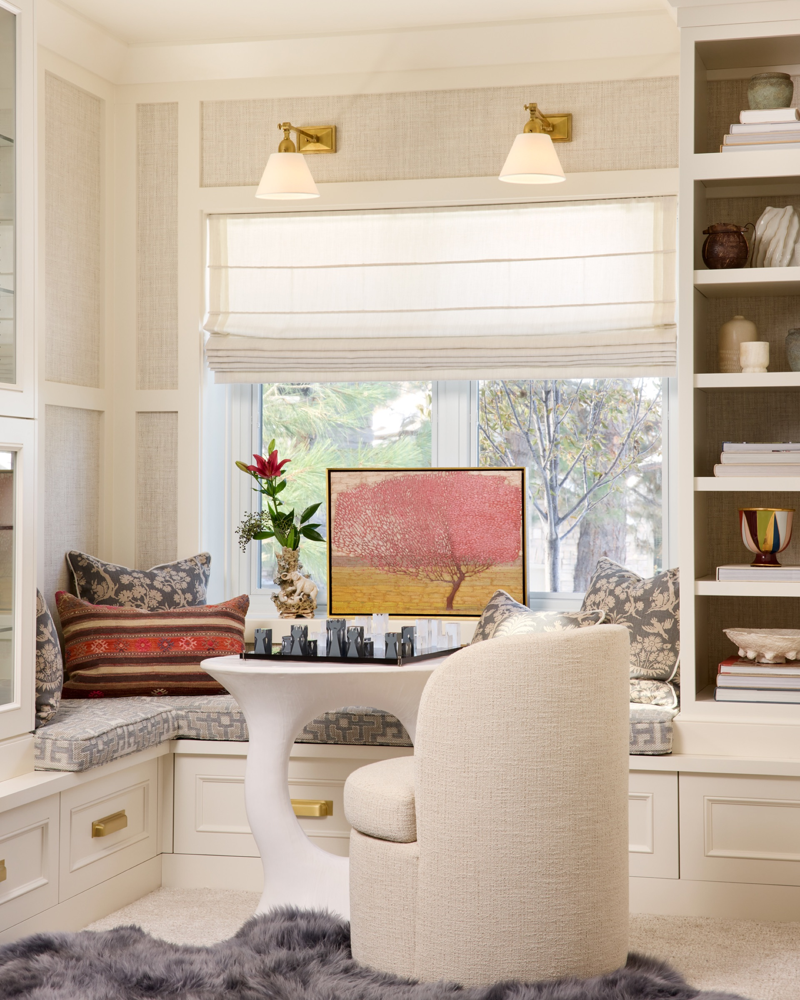

Personal spaces. Enduring character.
A sense of place.
01 / In the light
The quiet is in the details.
02 / In good company
The most memorable rooms
have something to say.
03 / A closer lookSmall things.
Small things.
A whole world.
A few of the details
that make a place personal.
01 / 06
The collected piece
02 / TextureArt in the everyday
03 / CompositionA place at the table
04 / GatheringA personal balance
05 / ObjectsThe first impression
06 / ArchitectureScroll to discover An edit of the Rivington Marx world
04 / At the atelier

A conversation between
design, architecture, and you.
It starts with your story.
The rituals, the collected objects, the way you want to feel. We begin by understanding what makes a place yours.
The beginning of something personalMake room
Make room
for what’s next.
A home with its own point of view.
Yours.
